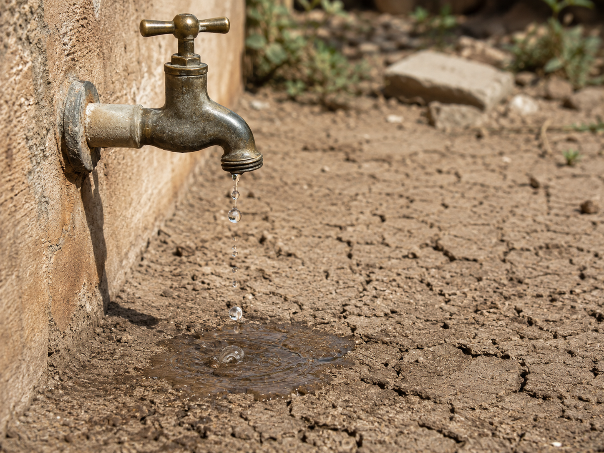
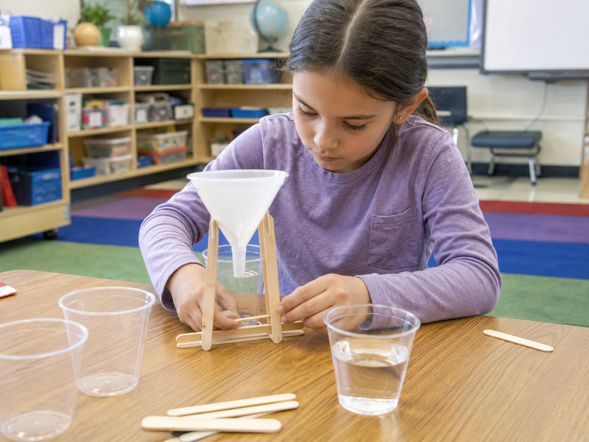

Hold that question as you work. By the end, you'll have a real answer — and evidence to back it up.

Engineers start the same way scientists do — by noticing a problem and asking questions. Your observations right now are part of the engineering process.
Engineers use specific words when they plan, build, and test solutions. Tap each card to flip it and read the definition. You'll need these words in the challenge today!
Copy this sentence carefully into your science notebook:
"Engineers evaluate solutions by checking if they meet the criteria and stay within the constraints."
Water is one of Earth's most important resources — but it's easy to waste. A leaky faucet, a sprinkler left running, rainwater flowing into a drain: it all adds up. Engineers see problems like these and ask a simple question: can we design something to fix it?
A water-saving deviceWater-Saving DeviceA tool or structure designed to reduce the amount of water that gets wasted. can be anything from a drip collector to a redirected downspout to a simple cup under a pipe. The idea isn't complicated — what matters is whether it works.
Before engineers build anything, they define two things. First: criteriaCriteriaThe requirements a design must meet to be considered successful. — exactly what the solution needs to do. Second: constraintsConstraintA real-world limit on the design, like materials, time, or cost. — the real-world limits they have to work within.
Knowing both lets engineers compare designs honestly — not just on looks, but on how well each one actually meets the requirements. That's what makes a comparison useful.
Engineers build a prototypePrototypeA test version of a design, built to try out and learn from., test it, and record the results. Then they compare: which solution met the criteria better? Real data from testing — not guesses — is how they decide.
Real-World Connection: In parts of the American Southwest, engineers have designed conservationConservationUsing less of a resource so it doesn't run out or go to waste. systems that capture rainwater from rooftops. The engineering process they used is exactly the same one you'll use today.
Engineers compare solutions by testing them against the same criteria and constraints. The best design isn't the fanciest — it's the one that best meets the requirements.
The choices you make in your design directly affect the results you measure. That's cause and effect at work in engineering.
Curious? Go Deeper
How do real cities save water at scale? Engineers have designed entire urban water systems around this question. Some cities collect rain from rooftops, filter it, and use it for parks, streets, and toilets — saving billions of gallons a year.
One famous example is Singapore — a small island nation with almost no natural freshwater supply. Engineers built a system that captures, filters, and reuses nearly every drop that falls on the island. They call it a "closed water loop."
The question those engineers asked first is exactly the one you're working on today: how do we build something that catches water before it's lost? They just had to solve it at a much bigger scale.
The Challenge: Design a simple device that collects or redirects water so it isn't wasted. Build two different designs, test both, and use your data to decide which one is better.
Criteria (what your device must do): Collect or redirect at least ½ cup of water from a running drip or stream in 30 seconds, without spilling more than a few drops.
Constraints (your limits): Use only materials from the supply bin. No tape holding the device to the table. Device must fit inside a shoebox.
Supply Bin: 2 plastic cups, 2 small paper cups, 1 sheet of aluminum foil (12 inches), 1 zip-top plastic bag, 2 craft sticks, 1 small funnel (optional), 1 rubber band, golf-ball-sized modeling clay, 1 straw. You don't have to use all of these.

Work through each step carefully. Record your observations in your notebook as you go.
Sketch Design A: In your notebook, draw and label your first idea. Label at least 3 parts. Write one sentence explaining how water moves through it. Do this before you build anything.
Build & Test Design A: Build your first prototype. Slowly pour water to simulate a drip, count to 30, then measure how much your device collected. Record the number in the chart below.
Sketch Design B: Think of a different approach — change the shape, direction, or materials. Draw and label Design B. Write what you changed and why you think it might work better.
Build & Test Design B: Build and run the same 30-second test. Use the same amount of water — if the test conditions aren't equal, the comparison won't be fair. Record your results.
Compare: Which design collected more? Did either one meet the criteria (at least ½ cup)? Write 2–3 sentences in your notebook explaining which solution worked better and why, using your measurements as evidence.
| Design | Materials Used | Water Collected (30 sec) | Met Criteria? (½ cup+) |
|---|---|---|---|
| Design A | |||
| Design B |
Good engineers keep careful records. Your notebook is evidence of your thinking — not just what worked, but what you noticed along the way.
Tell the story of your challenge from beginning to end — what you tried, what happened, and what you would do differently next time.
Think through each question on your own. Write your answers in your science notebook before moving on.
🔍 Part A — Compare Your Results
Use your data chart and design sketches from the challenge to answer these questions.
🚀 Part B — Short Answer
Answer in complete sentences. Use your science vocabulary!
Which design solution worked better — and how do you know?
What do you think?
💡 Start with: "I think Design ___ worked better because…"
What did you observe or measure that supports your thinking?
💡 Start with: "I know this because when I tested it, I measured…"
Why does that make sense?
💡 Start with: "This makes sense because…"
📚 Try to use at least one of these words: criteria, constraint, evaluate
🎨 Part C — Draw & Label
In your science notebook, draw your better-performing design. Label at least 4 parts. Add an arrow showing the direction water moves. Under the drawing, write one sentence explaining how the device meets the criteria.
Submit your work on Canvas using one of these options:
Make sure your submission includes all of these: